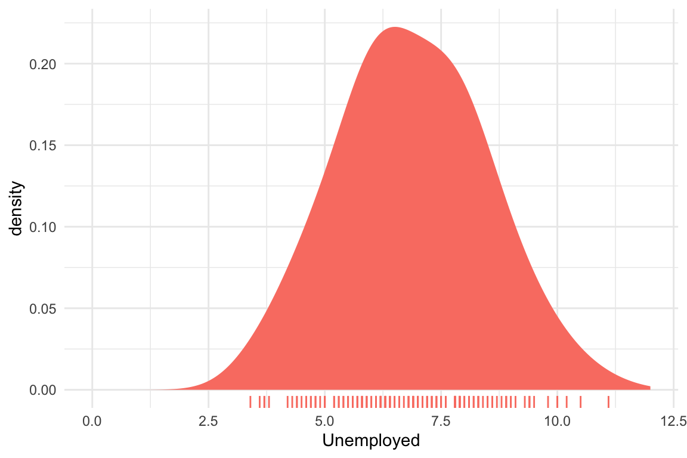
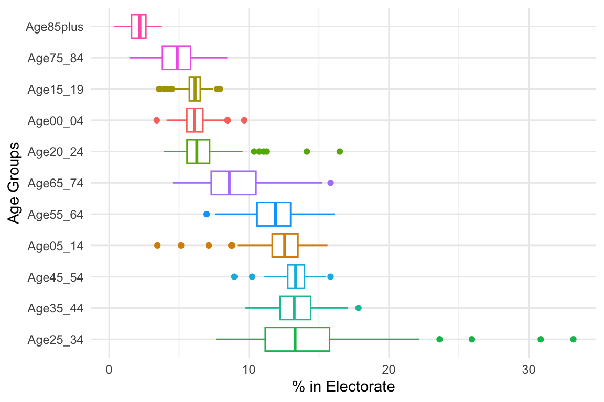

Exploring the Census data: A case study of 2016
Nicholas Tierney, Rob J Hyndman and Jeremy Forbes
2019-03-15
Source:vignettes/exploring-census-data.Rmd
exploring-census-data.RmdIntroduction
The eechidna (Exploring Election and Census Highly Informative Data Nationally for Australia) R package makes it easy to look at the Census (and election) data from the 2001, 2006, 2011 and 2016 Australian Censuses.
This vignette documents how to access the Census data, using the example of 2016, and shows a few typical methods that can be used to explore the data.
2016 Census data
The data is loaded as abs2016 when you load eechidna.
Here we see that we have 150 observations and 86 variables.
Each observation is data pertaining to a particular federal electorate as described by http://www.aec.gov.au/profiles/.
Each variable is described here:
| Variable | Details |
|---|---|
| UniqueID | Commonwealth Electoral District identifier |
| DivisionNm | Name of electorate |
| State | State containing electorate |
| Population | Total population of electorate |
| Area | Area of electorate division in square kilometres |
| Age00_04 | Percentage of people aged 0-4. |
| Age05_14 | Percentage of people aged 5-9. |
| Age15_19 | Percentage of people aged 15-19. |
| Age20_24 | Percentage of people aged 20-24. |
| Age25_34 | Percentage of people aged 25-34. |
| Age35_44 | Percentage of people aged 35-44. |
| Age45_54 | Percentage of people aged 45-54. |
| Age55_64 | Percentage of people aged 55-64. |
| Age65_74 | Percentage of people aged 65-74. |
| Age75_84 | Percentage of people aged 75-84. |
| Age85plus | Percentage of people aged 85 or higher. |
| Anglican | Percentage of people affiliated with the Anglican denomimation |
| AusCitizen | Percentage of people who are Australian Citizens |
| AverageHouseholdSize | Average number of people in a household |
| BachelorAbv | Percentage of people who have completed a Bachelor degree or above |
| Born_Asia | Percentage of people born in Asia |
| Born_MidEast | Percentage of people born in the Middle East |
| Born_SE_Europe | Percentage of people born in South Eastern Europe |
| Born_UK | Percentage of people born in the United Kingdom |
| BornElsewhere | Percentage of people born in a different region outside of Australia |
| BornOverseas_NS | Percentage of people who did not answer the question relating to birthplace |
| Buddhism | Percentage of people affiliated with the Buddhist religion |
| Catholic | Percentage of people affiliated with the Catholic denomimation |
| Christianity | Percentage of people affiliated with the Christian religion (of all denominations) |
| Couple_NoChild_House | Percentage of households made up of a couple with no children |
| Couple_WChild_House | Percentage of households made up of a couple with children |
| CurrentlyStudying | Percentage of people who are currently studying |
| DeFacto | Percentage of people who are in a de facto marriage |
| DiffAddress | Percentage of people who live at a different address to what they did 5 years ago |
| DipCert | Percentage of people who have completed a diploma or certificate (not including graduate diploma) |
| Distributive | Percentage of employed persons who work in wholesale trade, retail trade, transport, post or warehousing related industries |
| EmuneratedElsewhere | Percentage of people who receive emuneration outside of Australia, out of the total population plus overseas visitors |
| EnglishOnly | Percentage of people who speak only English |
| Extractive | Percentage of employed persons who work in extractive industries (includes mining, gas, water, agriculture, waste, electricity) |
| FamilyIncome_NS | Percentage of people who did not answer the question relating to family income |
| FamilyRatio | Average number of people per family |
| Finance | Percentage of employed persons who work in finance or insurance related industries |
| HighSchool | Percentage of people who have completed high school |
| HighSchool_NS | Rate of nonresponse for questions relating to high school completion |
| HouseholdIncome_NS | Percentage of people who did not answer the question relating to houshold income |
| Indigenous | Percentage of people who are Indigenous |
| InternetAccess | Percentage of people with access to the internet |
| InternetAccess_NS | Rate of nonresponse for questions relating to internal access |
| InternetUse | Percentage of people who used interent in the last week [2001 only] |
| InternetUse_NS | Rate of nonresponse for questions relating to internet use [2001 only] |
| Islam | Percentage of people affiliated with the Islamic religion |
| Judaism | Percentage of people affiliated with the Jewish religion |
| Laborer | Percentage of employed persons who work as a laborer |
| Language_NS | Rate of nonresponse for questions relating to language spoken at home |
| LFParticipation | Labor force participation rate |
| ManagerAdminClericalSales | Percentage of employed persons who work in management, administration, clerical duties and sales |
| Married | Percentage of people who are married |
| MedianAge | Median age |
| MedianFamilyIncome | Median weekly family income (in $) |
| MedianHouseholdIncome | Median weekly household income (in $) |
| MedianLoanPay | Median mortgage loan repayment amount (of mortgage payments, in $) |
| MedianPersonalIncome | Median weekly personal income (in $) |
| MedianRent | Median weekly rental payment amount (of those who rent, in $) |
| Mortgage | Percentage of dwellings that are on a mortgage |
| NoReligion | Percentage of people with no religion |
| OneParent_House | Percentage of households made up of one parent with children |
| Other_NonChrist | Percentage of people affiliated with a religion other than Christianity, Buddhism, Islam and Judaism |
| OtherChrist | Percentage of people affiliated with a denomination of the Christian religion other than Anglican or Catholic |
| OtherLanguageHome | Percentage of people who speak a language other than English at home |
| Owned | Percentage of dwellings that are owned outright |
| PersonalIncome_NS | Rate of nonresponse for questions relating to personal income |
| Professional | Percentage of employed persons who work as a professional |
| PublicHousing | Percentage of dwellings that are owned by the government, and rented out to tenants |
| Religion_NS | Rate of nonresponse for questions relating to religion |
| Rent_NS | Rate of nonresponse for questions relating to rental costs |
| Renting | Percentage of dwellings that are being rented |
| SocialServ | Percentage of employed persons who work in education and training, healthcare, wocial work, community, arts and recreation |
| SP_House | Percentage of households occupied by a single person |
| Tenure_NS | Rate of nonresponse for questions relating to tenure |
| Tradesperson | Percentage of employed persons who specialise in a trade |
| Transformative | Percentage of employed persons who work in construction or manufacturing related industries |
| Unemployed | Unemployment rate |
| University_NS | Rate of nonresponse for questions relating to University |
| Volunteer | Percentage of people who work as a volunteer |
| Volunteer_NS | Rate of nonresponse for questions relating to working as a volunteer |
So let’s just look at some nice and simple plots using ggplot2.
Unemployment
library(ggplot2)
ggplot(data = abs2016,
aes(x = Unemployed)) +
geom_density(fill = "salmon",
bw = "SJ",
colour = NA) +
geom_rug(colour = "salmon") +
theme_minimal() +
xlim(0, 12)
Unemployment by state
ggplot(data = abs2016,
aes(x = reorder(State, -Unemployed),
y = Unemployed,
colour = State)) +
geom_boxplot() +
labs(x = "State",
y = "% Unemployment") +
theme_minimal() +
theme(legend.position = "none") 
Age
ggplot(data = abs2016,
aes(x = Age00_04)) +
geom_density(fill = "steelblue",
bw = "SJ",
colour = NA) +
xlim(3,11) +
geom_rug(colour = "steelblue") +
theme_minimal() +
labs(x = "% Aged between 0 and 4")
ggplot(data = abs2016,
aes(x = reorder(State, -Age00_04),
y = Age00_04,
colour = State)) +
geom_boxplot() +
theme_minimal() +
labs(x = "State",
y = "% Aged between 0 and 4") +
theme(legend.position = "none") +
coord_flip()
However, there are many age groups. To look at all of them at once, we can gather them into a dataframe ready for plotting using tidyr.
##
## Attaching package: 'dplyr'## The following objects are masked from 'package:stats':
##
## filter, lag## The following objects are masked from 'package:base':
##
## intersect, setdiff, setequal, unionabs2016 %>%
select(starts_with("Age"),
DivisionNm) %>%
gather(key = "Age",
value = "Percent_in_electorate",
-DivisionNm) %>%
ggplot(data = .,
aes(x = reorder(Age, - Percent_in_electorate),
y = Percent_in_electorate,
colour = Age)) +
geom_boxplot() +
coord_flip() +
theme_minimal() +
theme(legend.position = "none") +
labs(x = "Age Groups",
y = "% in Electorate")
Personal Income
ggplot(data = abs2016,
aes(x = MedianPersonalIncome)) +
geom_density(fill = "salmon",
bw = "SJ",
colour = NA) +
xlim(250,1100) +
geom_rug(colour = "salmon") +
theme_minimal()
Income by State
ggplot(data = abs2016,
aes(x = reorder(State, -MedianPersonalIncome),
y = MedianPersonalIncome,
colour = State)) +
geom_boxplot() +
theme_minimal() +
theme(legend.position = "none") +
labs(x = "State")
If you’re intersted in getting a sense of the distribution of the data, you can add in the points to get a bit more of a sense on the distribution.
ggplot(data = abs2016,
aes(x = reorder(State, -MedianPersonalIncome),
y = MedianPersonalIncome,
colour = State)) +
geom_boxplot() +
geom_jitter(alpha = 0.35,
size = 2,
width = 0.3) +
theme_minimal() +
theme(legend.position = "none") +
labs(x = "State")
Education
Bachelor and above
ggplot(data = abs2016,
aes(x = BachelorAbv)) +
geom_density(fill = "salmon",
bw = "SJ",
colour = NA) +
geom_rug(colour = "salmon") +
theme_minimal() +
labs(x = "% of electorate with a Bachelor degree or above") +
xlim(0, 55)

Diploma and Certificate
ggplot(data = abs2016,
aes(x = reorder(State, -DipCert),
y = DipCert,
colour = State)) +
geom_boxplot() +
theme_minimal() +
labs(x = "State") +
theme(legend.position = "none")
Diploma and Certificate and income
ggplot(data = abs2016,
aes(x = DipCert,
y = MedianPersonalIncome)) +
geom_point(colour = "steelblue",
alpha = 0.75) +
theme_minimal()
Comparing income across Bachelor (and above) and Diploma/Certificate
abs2016 %>%
select(DipCert,
BachelorAbv,
MedianPersonalIncome) %>%
gather(key = "Education",
value = "Prop_Educated",
-MedianPersonalIncome) %>%
ggplot(data = ,
aes(x = Prop_Educated,
y = MedianPersonalIncome,
colour = Education)) +
geom_point() +
geom_smooth() +
theme_minimal() +
scale_color_brewer(type = "qual", palette = "Set1")## `geom_smooth()` using method = 'loess' and formula 'y ~ x'Religion
Let’s look at all of the religions
abs2016 %>%
select(Christianity,
Catholic,
Buddhism,
Islam,
Judaism,
NoReligion) %>%
gather(key = "ReligionType",
value = "Percent") %>%
ggplot(data = .,
aes(x = reorder(ReligionType, -Percent),
y = Percent,
colour = ReligionType)) +
geom_boxplot() +
theme_minimal() +
theme(legend.position = "none") +
coord_flip() +
labs(x = "Religion")